Figure 1 Compound transition window
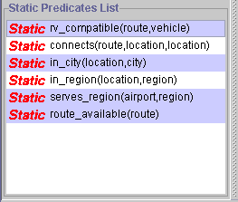
Figure 2 Multiple selection of the statics
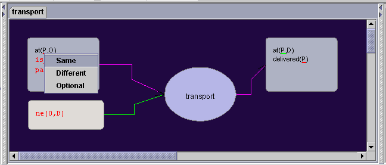
Figure 3 Editing mode
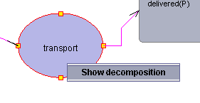
Figure 4 Popup menu for the decomposition of the compound operator
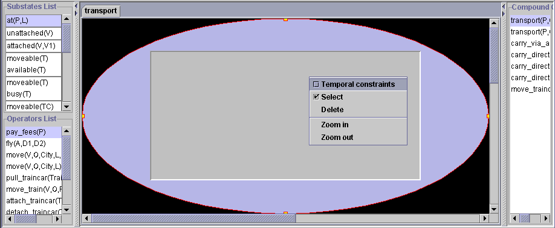
Figure 5 Decomposition canvas
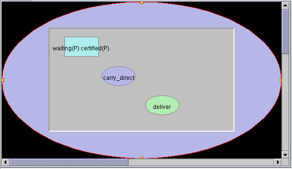
Figure 6 Forming decomposition by mouse drag and drop
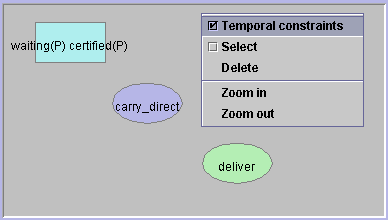
Figure 7 Function popup menu
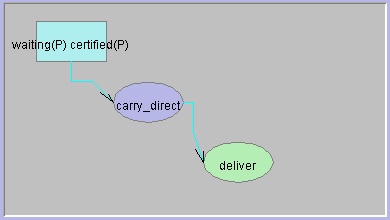
Figure 8 Finished decomposition
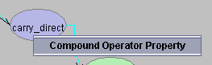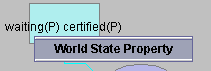
Figure 9 Property menu
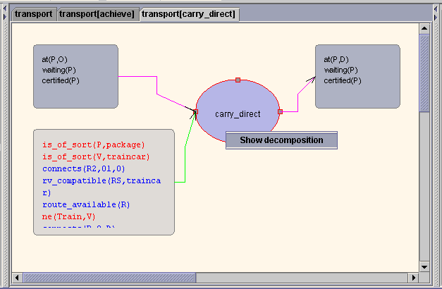
Figure 10 Property menu

Figure 11 Property window of achieve clause also available for editing
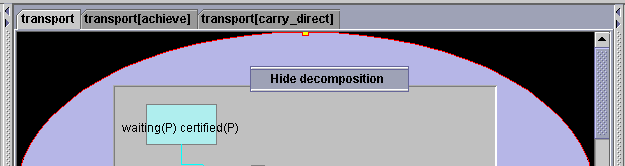
Figure 12 From decomposition mode back to the normal mode